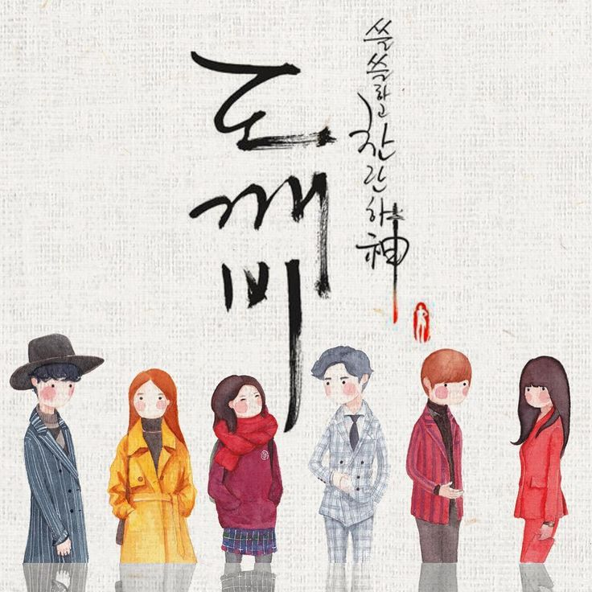

Korean dramas ( RR: hanguk drama), more popularly known as K-dramas, are television series ( RR: deurama) in the Korean language, made in South Korea.
Korean dramas are popular worldwide, partially due to the spread of Korean popular culture (the "Korean Wave"), and their widespread availability via streaming services which often offer subtitles in multiple languages. Many K-dramas have been adapted throughout the world, and some have had great impact on other countries. Some of the most famous dramas have been broadcast via traditional television channels in other countries
A single director usually leads Korean dramas, which are often written by a single screenwriter. This often leads to each drama having distinct directing and dialogue styles. This differs from American television series, which can rely on multiple directors and writers working together.
Series set in contemporary times typically run for a single season and usually contain 12 to 24 episodes of 60 minutes each. Historical series may be longer, with up to 200 episodes, but they also generally run for only one season. This differs from American television series, where the first season does not have a definitive end as the plot is being setup to last for multiple seasons.
KDRAMA ADDICT

The Lonely and Great God
Kim Shin (Gong Yoo), a decorated military general from the Goryeo Dynasty, is framed as a traitor and killed by the young king. Years after his death, he is cursed by the almighty to stay immortal forever and endure the pain of seeing his loved ones die as punishment for the kills he committed in the wars to protect his country. He becomes an immortal goblin, helping people with his powers and being a kind man in spite of his grieving past. The only way to put an end to his immortality is the Goblin's bride, whose aid in pulling out the sword will end his painful immortality.
Kingdom
Kingdom (RR: Kingdeom) is a 2019 South Korean political period horror thriller web television series written by Kim Eun-hee and directed by Kim Seong-hun.It is Netflix's first original Korean series, which premiered on January 25, 2019. The series is adapted from the webcomic series The Kingdom of the Gods, which was authored by Kim Eun-hee and drawn by Yang Kyung-il.
The series was positively reviewed, and renewed for a second season which was released on March 13, 2020
DRAMA COOL
Privacy Policy | Terms of Use
Copyright © 2020 Dramacool
Facebook
Instagram
Twitter
Privacy Policy | Terms of Use